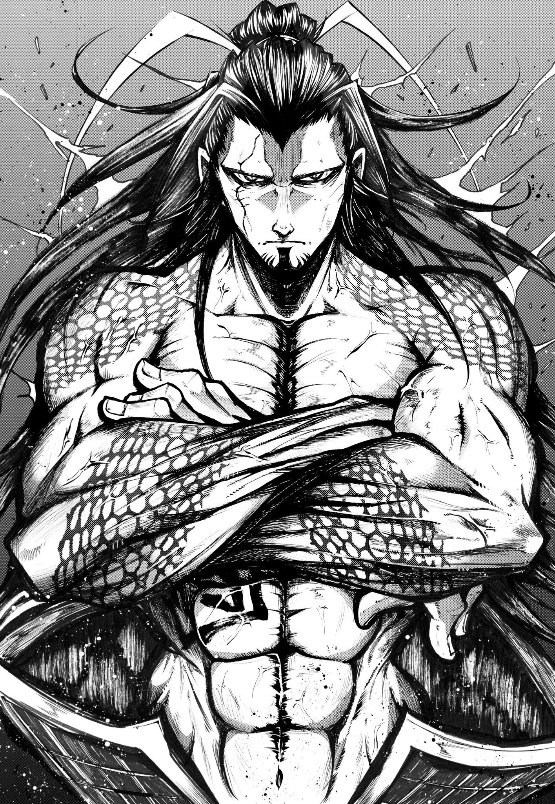

Pepito Perez @pepito1313
Había una mujer, fue la primera vez que encontré a alguien que estuviera verdaderamente vivo. Al menos, eso fue lo que pensé.
Ella era... la parte de mí que perdí en algún lugar del camino, la parte que faltaba, la que deseaba.